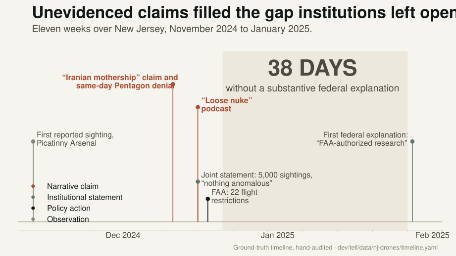
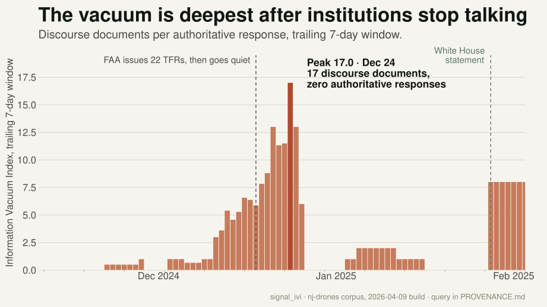
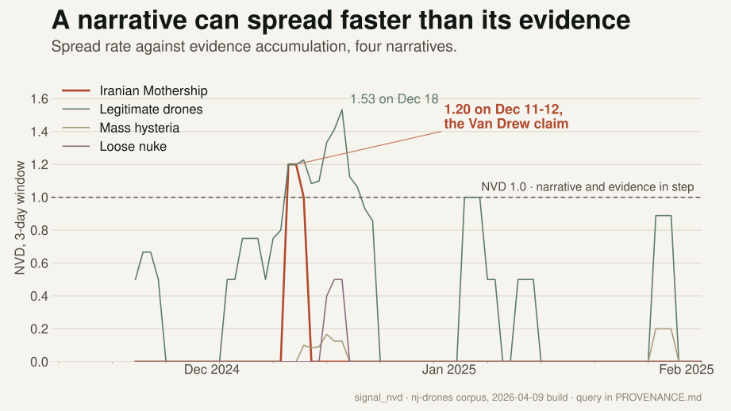
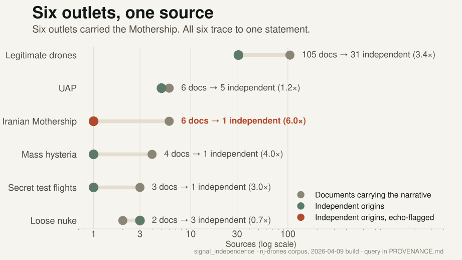
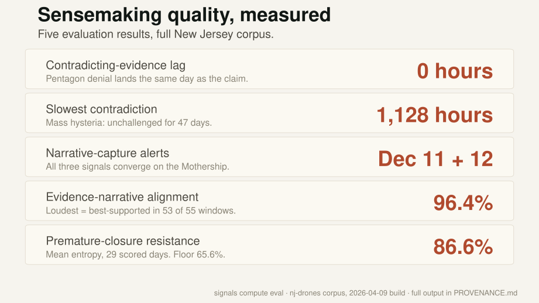
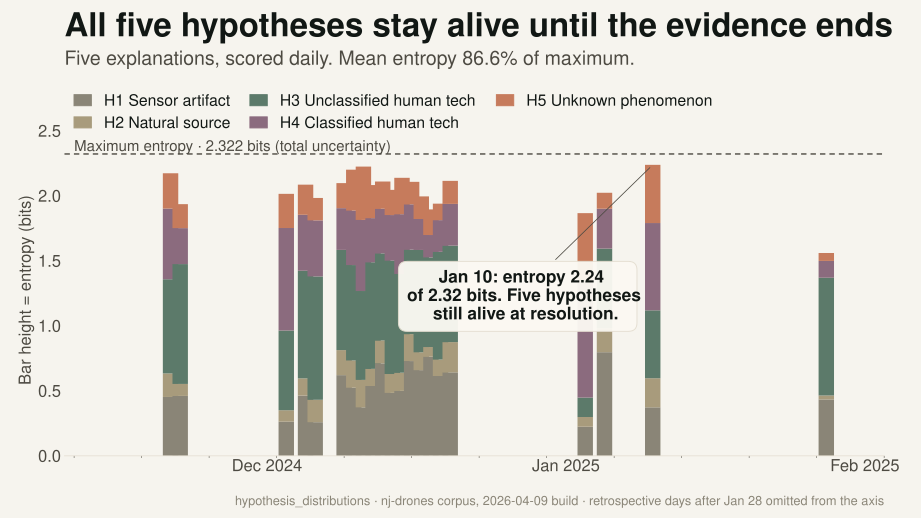
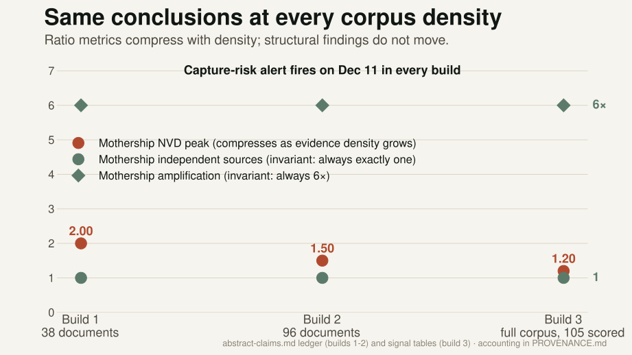

Three measures for detecting narrative capture

Did the system predict the right answer?
Did it keep human sensemaking healthy while nobody knew the answer?






Ambiguous early reports, slow institutional response, fast unofficial theories.
Public discourse outrunning regulatory understanding.
Competing explanations circulating before root cause lands.
Contested claims amplified faster than forensics can answer.
Papers, methods, and the live pipeline · tell-fyi.vercel.app